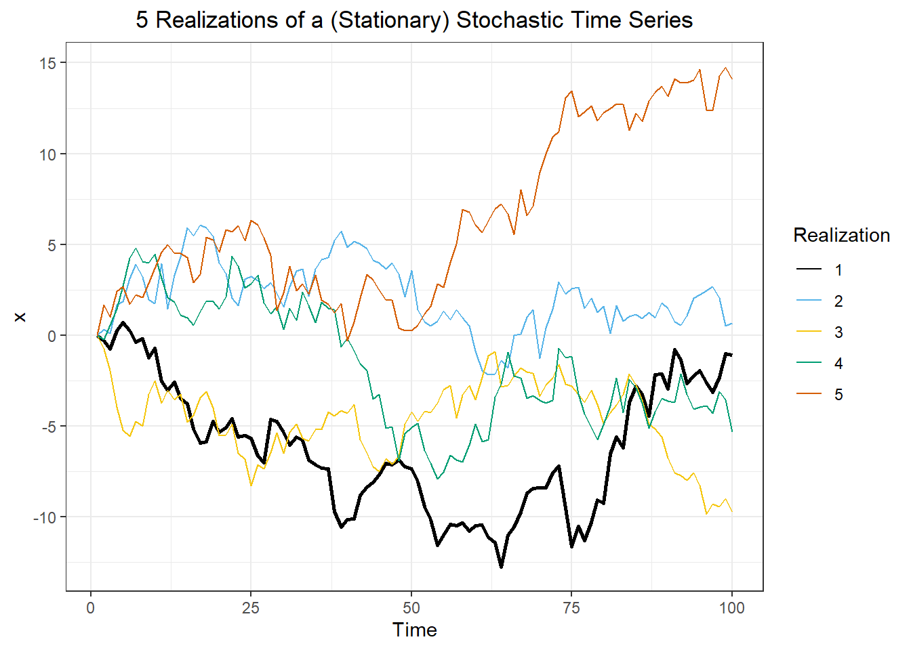
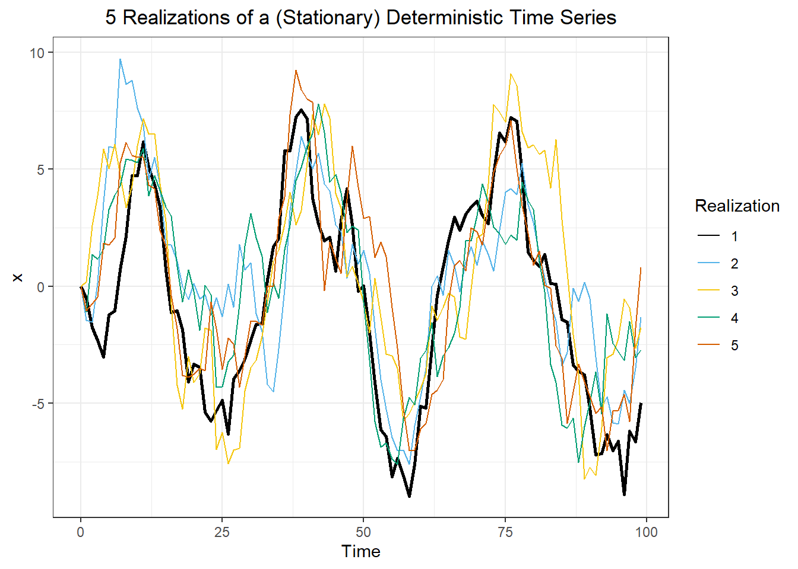
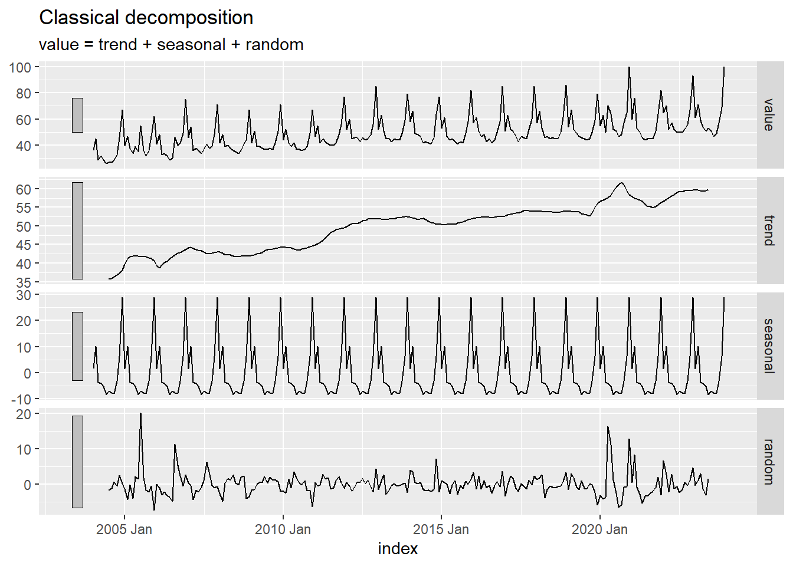
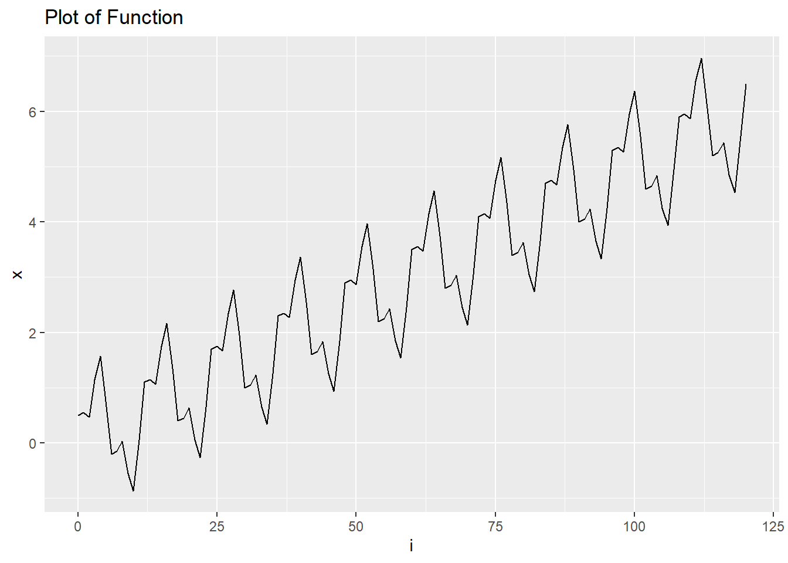

# install.packages("pak")
#pak::pak("posit-dev/r-shinylive")Plots Trends, and Seasonal Variation
Chapter 1: Lesson 2
# #| standalone: trueLearning Outcomes
Use technical language to describe the main features of time series data
- Define time series analysis
- Define time series
- Define sampling interval
- Define serial dependence or autocorrelation
- Define a time series trend
- Define seasonal variation
- Define cycle
- Differentiate between deterministic and stochastic trendsUse R to describe key features of time series data
- Create a seasonal summmary of a time seriesPlot time series data to visualize trends, seasonal patterns, and potential outliers
- Plot a "ts" object
- Combine multiple "ts" objects into a single plot ????????????????????????????????????????????????????????????????????????-TIED-TO-CORRELATION-IS-NOT-CAUSATION-?????????????????? When?
- Make boxplots to examine distribution of values within each seasonPreparation
- Read Sections 1.1-1.4 and 1.5.1-1.5.3
Learning Journal Exchange (15 min)
- Review another student’s journal
- What would you add to your learning journal after reading your partner’s?
- What would you recommend your partner add to their learning journal?
- Sign the Learning Journal review sheet for your peer
Vocabulary and Momenclature Matching Activity (15 min)
Comparison of Deterministic and Stochastic Time Series (5 min)
Stochastic Time Series
The following app illustrates a few realizations of a stochastic time series.
Tyson: Note tht this was moved from Chapter 2, Lesson 2 to here…
TYSON: PLEASE BUILD A SHINY APP IN WHICH STUDENTS CAN PRESS A BUTTON TO REFRESH THE IMAGE BELOW AND OBSERVE DIFFERENT REALIZATIONS. PLEASE MAKE SLIDERS FOR THE PARAMETERS n (from 10 to 500 by 10), a (from 0 to 1 by 0.005), and n_reps (from 1 to 9 by 1).

- If a stochastic time series displays an upward trend, can we conclude that trend will continue in the same direction? Why or why not?
Deterministic Time Series
Tyson: NOTE This was added 12/28.
TYSON: PLEASE BUILD A SHINY APP IN WHICH STUDENTS CAN PRESS A BUTTON TO REFRESH THE IMAGE BELOW AND OBSERVE DIFFERENT REALIZATIONS. PLEASE MAKE SLIDERS FOR THE PARAMETERS n (from 10 to 500 by 10), sigma (from 0 to 5 by 0.1), scale (from 0.5 to 20 by 0.5), and n_reps (from 1 to 9 by 1).
The figure below illustrates realizations of a deterministic time series. The data fluctuate around a sine curve.

Hands-on Exercise: Exploring a time series in R (Google Trends: Chocolate) (20 min)
Recall the Google Trends data for the term “chocolate” from the last lesson. The cleaned data are available in the file chocolate.csv.
Import the chocolate search data and convert to tsibble format
Use the code below to import the data and convert it into a time series (tsibble) object.
# load packages
if (!require("pacman")) install.packages("pacman")
pacman::p_load("tsibble", "fable",
"feasts", "tsibbledata",
"fable.prophet", "tidyverse",
"patchwork", "rio")
# read in the data from a csv and make the tsibble
# change the line below to include your file path
chocolate_month <- rio::import("data/chocolate.csv")
start_date <- lubridate::ymd("2004-01-01")
date_seq <- seq(start_date,
start_date + months(nrow(chocolate_month)-1),
by = "1 months")
chocolate_tibble <- tibble(
dates = date_seq,
year = lubridate::year(date_seq),
month = lubridate::month(date_seq),
value = pull(chocolate_month, chocolate)
)
chocolate_month_ts <- chocolate_tibble |>
mutate(index = tsibble::yearmonth(dates)) |>
as_tsibble(index = index)
# generate the plot
choc_plot <- autoplot(chocolate_month_ts, .vars = value) +
labs(
x = "Month",
y = "Searches",
title = "Relative Number of Google Searches for 'Chocolate'"
) +
theme(plot.title = element_text(hjust = 0.5))
choc_plot
Explore R commands summarizing time series data
Aggregate to the annual level
To help visualize what is happening with a time series, we often aggregate the data in the time series to the annual level. This can make it easier to spot a trend. The first plot is the time series plot of the raw data, and the second plot is a time series plot of the annual means.
chocolate_annual_ts <- summarise(index_by(chocolate_month_ts, year), value = mean(value))
# monthly plot
mp <- autoplot(chocolate_month_ts, .vars = value) +
labs(
x = "Month",
y = "Searches",
title = "Relative Number of Google Searches for 'Chocolate'"
) +
theme(plot.title = element_text(hjust = 0.5))
# yearly plot
yp <- autoplot(chocolate_annual_ts, .vars = value) +
labs(
x = "Year",
y = "Searches",
title = "Mean Annual Google Searches for 'Chocolate'"
) +
scale_x_continuous(breaks = seq(2004, max(chocolate_month_ts$year), by = 2)) +
theme(plot.title = element_text(hjust = 0.5))
# display both simultaneously
mp / yp
Boxplot of Seasonal Values
To better visualize the effect of seasonal variation, we can make box plots by month.
pbox <- ggplot(chocolate_month_ts, aes(x = factor(month), y = value)) +
geom_boxplot() +
labs(
x = "Month Number",
y = "Searches",
title = "Boxplots of Google Searches for 'Chocolate' by Month"
) +
theme(plot.title = element_text(hjust = 0.5))
pbox
Additive Decomposition
The additive model for a time series, \(\{x_t\}\), is:
\[ x_t = m_t + s_t + z_t \]
where \(x_t\) is the observed series, \(m_t\) is the trend, \(s_t\) is the seasonal effect, \(z_t\) is random variation, and \(t = 1, 2, 3, \ldots, n\). We consider \(z_t\) as a sequence of correlated random variables with mean 0.
The residual is the part of the time series that is not explained by the trend or the seasonal effect. This is an estimate of $ For an additive model, the residual is computed as: \[ Residual = Value - Trend - Seasonal \]
The code below produces a plot showing the original data in the time series, the trend, the seasonal effect, and the residual (random component).
choc_decompose <- chocolate_month_ts |>
model(feasts::classical_decomposition(value,
type = "add")) |>
components()
autoplot(choc_decompose)
Hands-on Exercise: Exploring simulated time series data (10 min)
Additive Model
The following code simulates 10 years of a monthly time series with a linear trend and seasonal variation with an additive model.
# Set random seed for reproducibility
set.seed(20)
# Set parameters & initialize vectors
num_years <- 10
n <- 12 * num_years
sigma <- .75
a <- 0.05
b <- 1
c <- 0.5
trend <- seasonal <- x <- rep(0,n)
time_seq <- seq(1,n)
# Generate correlated error terms
w <- rnorm(n + 4, 0, 1)
z = w + lead(w,1) + lead(w,2) + lead(w,3) + lead(w,4)
z = head(z, n) / 2
# Get date
year_seq <- lubridate::year(today()) - num_years + (time_seq - 1) %/% 12
month_seq <- (time_seq - 1) %% 12 + 1
date_seq <- ymd(paste0(year_seq,"-",month_seq,"-01"))
# Get data
for (t in 1:n) {
trend[t] <- a * t + 10
seasonal[t] <- b * sin(t / 12 * 2 * pi * 1) + c * cos(t / 12 * 2 * pi * 3)
x[t] <- trend[t] + seasonal[t] + z[t]
}
x_df <- data.frame(x = x, trend = trend, seasonal = seasonal)
start_year <- lubridate::year(today()) - num_years
start_date <- lubridate::ymd(paste0(start_year,"-01-01"))
# start_date <- lubridate::ymd("1958-01-01")
date_seq <- seq(start_date,
start_date + months(nrow(x_df)-1),
by = "1 months")
x_df_ts <- x_df |>
mutate(
date = date_seq,
Month = tsibble::yearmonth(date)) |>
as_tsibble(index = Month)The code above has generated simulated data, where the trend is linear with equation
\[ m_t = \frac{t}{20} \]
and the seasonal effect follows the function
\[ s_t = \sin \left( \frac{t\pi}{6} \right) + \frac{1}{2}\cos\left(\frac{t \pi}{18} \right) + 5 \]
Letting \(t\) represent the month number across 10 years, we simulate a time series. Click on the tabs below to compare the actual construction of the time series (using the components generated in the code above) to the decomposition in R.
Here is a plot of the components of the simulated data.
Show the code
trend_plot <- ggplot(x_df_ts, aes(x=Month, y=trend)) +
geom_line() +
labs(
title="Plot of Trend",
x="Month",
y="Trend"
) +
theme(plot.title = element_text(hjust = 0.5))
seasonal_plot <- ggplot(x_df_ts, aes(x=Month, y=seasonal)) +
geom_line() +
labs(
title="Plot of Seasonal Effect",
x="Month",
y="Seasonal"
) +
theme(plot.title = element_text(hjust = 0.5))
# trend_plot / seasonal_plot
error_plot <- ggplot(x_df_ts, aes(x = Month, y = x - trend - seasonal)) +
geom_line() +
labs(
title="Plot of Random Error Term",
x="Month",
y="Random"
) +
theme(plot.title = element_text(hjust = 0.5))
x_plot <- ggplot(x_df_ts, aes(x=Month, y=x)) +
geom_line() +
labs(
title="Plot of Simulated Time Series",
x="Month",
y="x"
) +
theme(plot.title = element_text(hjust = 0.5))
# error_plot / x_plot
x_plot <- x_plot + labs(title = "True (Simulated) Values", x = NULL)
trend_plot <- trend_plot + labs(title = NULL, x = NULL)
seasonal_plot <- seasonal_plot + labs(title = NULL, x = NULL)
error_plot <- error_plot + labs(title = NULL)
x_plot / trend_plot / seasonal_plot / error_plot 
Now, we use R to decompose the time series \(\{x_t\}\).
Show the code
x_decompose <- x_df_ts |>
model(feasts::classical_decomposition(x,
type = "add")) |>
components()
autoplot(x_decompose)
Note on Additive and Multiplicative Models in the Textbook and R
Both the textbook and R use the same model in the additive case:
\[ x_t = m_t + s_t + z_t \]
However, there is a discrepancy in the definitions for the mulitplicative models. The textbook defines the multiplicative model as
\[ x_t = m_t \cdot s_t + z_t \] but R defines the multiplicative model as
\[ x_t = m_t \cdot s_t \cdot z_t \] You can investigate R’s definition by executing this command in RStudio.
?classical_decompositionMultiplicative Model
We use the same simulated data as before, but this time we apply R’s multiplicative model. This implies that the error term, \(z_t\), has a mean of 1, rather than 0.
# Set random seed for reproducibility
set.seed(123)
# Set parameters & initialize vectors
num_years <- 10
n <- 12 * num_years
sigma <- .75
a <- 0.03
b <- 1
c <- 0.5
trend <- seasonal <- x <- rep(0,n)
time_seq <- seq(1,n)
# Generate correlated error terms
w <- rnorm(n + 4, 0.2, 0.1) # Changed to a mean of 1 and sd of 0.03
z = w + lead(w,1) + lead(w,2) + lead(w,3) + lead(w,4)
z = head(z, n)
# Get date
year_seq <- lubridate::year(today()) - num_years + (time_seq - 1) %/% 12
month_seq <- (time_seq - 1) %% 12 + 1
date_seq <- ymd(paste0(year_seq,"-",month_seq,"-01"))
# Get data
for (t in 1:n) {
trend[t] <- exp(a * t)
seasonal[t] <- b * sin(t / 12 * 2 * pi * 1) + c * cos(t / 12 * 2 * pi * 3) + 5
x[t] <- trend[t] * seasonal[t] * z[t] # Note R's definition of the mult. model
}
x_df <- data.frame(x = x, trend = trend, seasonal = seasonal)
start_year <- lubridate::year(today()) - num_years
start_date <- lubridate::ymd(paste0(start_year,"-01-01"))
# start_date <- lubridate::ymd("1958-01-01")
date_seq <- seq(start_date,
start_date + months(nrow(x_df)-1),
by = "1 months")
x_df_ts <- x_df |>
mutate(
date = date_seq,
Month = tsibble::yearmonth(date)) |>
as_tsibble(index = Month)The code above simulated data, where the trend is expoential with equation
\[ m_t = e^{0.03 t} \]
and the seasonal effect follows the function
\[ s_t = \sin \left( \frac{t\pi}{6} \right) + \frac{1}{2}\cos\left(\frac{t \pi}{18} \right) + 5 \]
Letting \(t\) represent the month number across 10 years, we get:

Now, we use R to decompose the time series \(\{x_t\}\).
x_decompose <- x_df_ts |>
model(feasts::classical_decomposition(x,
type = "mult")) |>
components()
autoplot(x_decompose)
Which Model Should I Use? Additive or Multiplicative?
Compare the following two time series.

Recap (5 min)
- Review objectives and key concepts
- Clarify questions on time series data